Index16 pages · 6 sections
Everything on bosonstudio.com.
One tree, three branches. Follow a branch, or search for a page, a project, or a technology.
- Pages
- 16
- Projects
- 12
- Sections
- 6
- Trackers
- 0
/
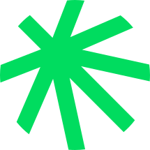
bosonstudio.com- 01/HomeThe studio, the work, and how to reach us.6 sections
- /#workSelected workFour of twelve products, with stack and sector.
- /#manifestoManifestoSeven lines on the work nobody sees.
- /#servicesServicesFour ways in, from web platforms to AI workflows.
- /#processProcessCollision, field, light: how a project runs.
- /#studioStudio and teamThree engineers and where the name comes from.
- /#contactStart a projectThe form, booking links and the studio clock.
- 02/projects/ProjectsThe full portfolio, filterable by type.12 projects
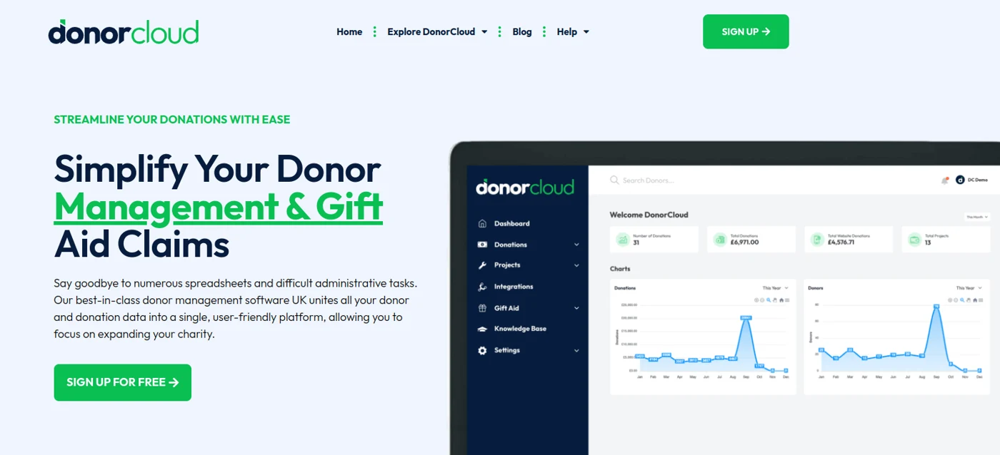
/projects/donorcloud.htmlDonorCloudFundraising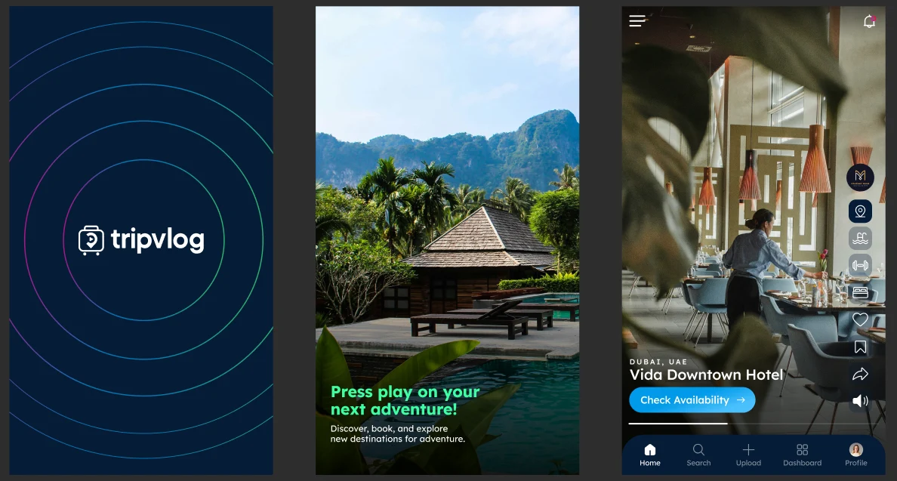
/projects/tripvlog.htmlTripvlogTravel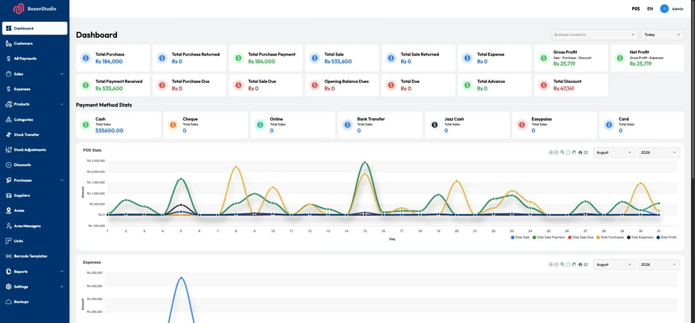
/projects/bosonpos.htmlBosonPOSRetail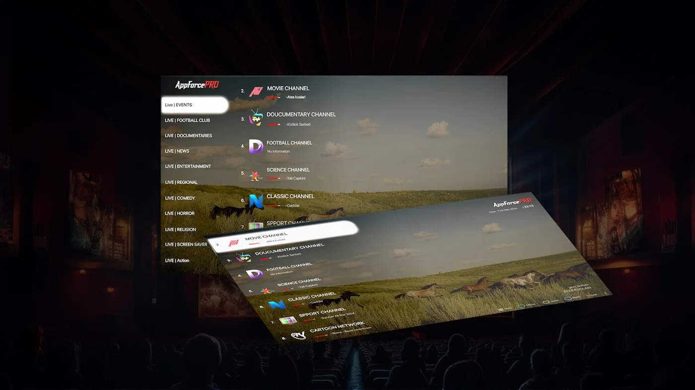
/projects/appforcepro.htmlAppforce ProMedia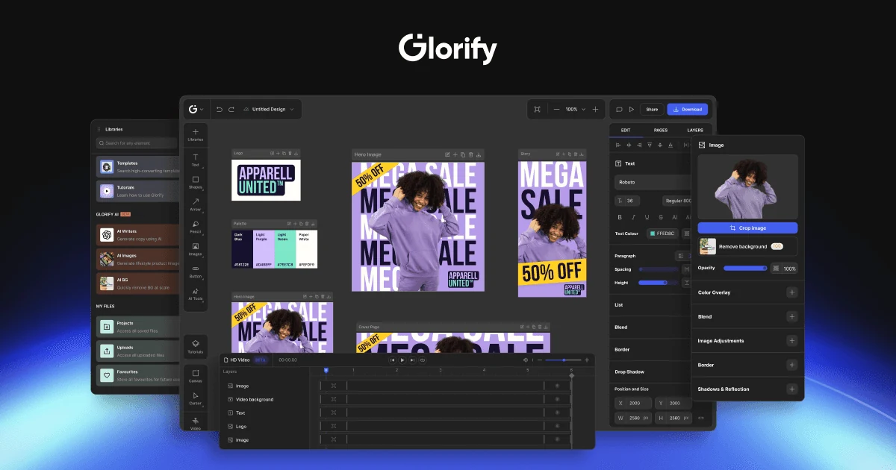
/projects/glorify.htmlGlorifyDesign tools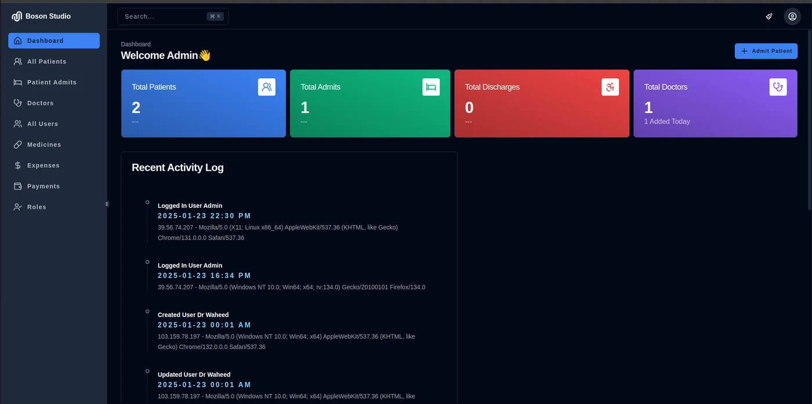
/projects/hospital-indoor-management-system.htmlHospital Indoor Management SystemHealthcare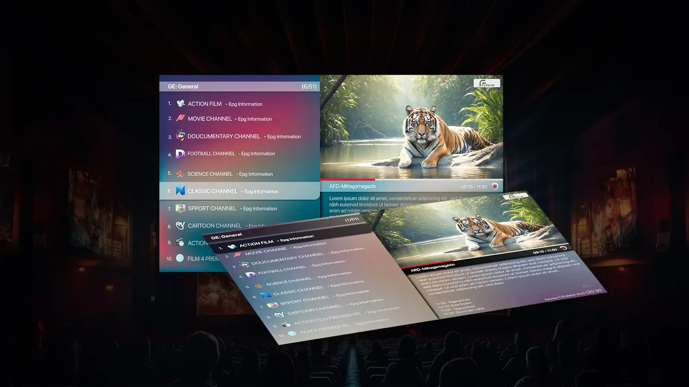
/projects/appforceclassic.htmlAppforce ClassicMedia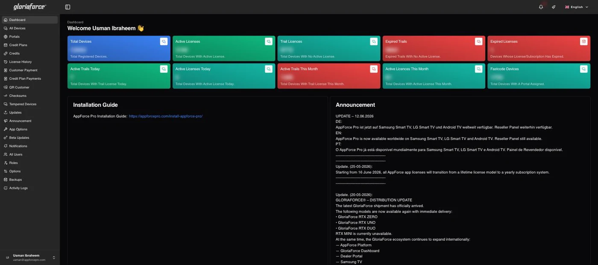
/projects/appforce-control-panel.htmlAppForce Control PanelOperations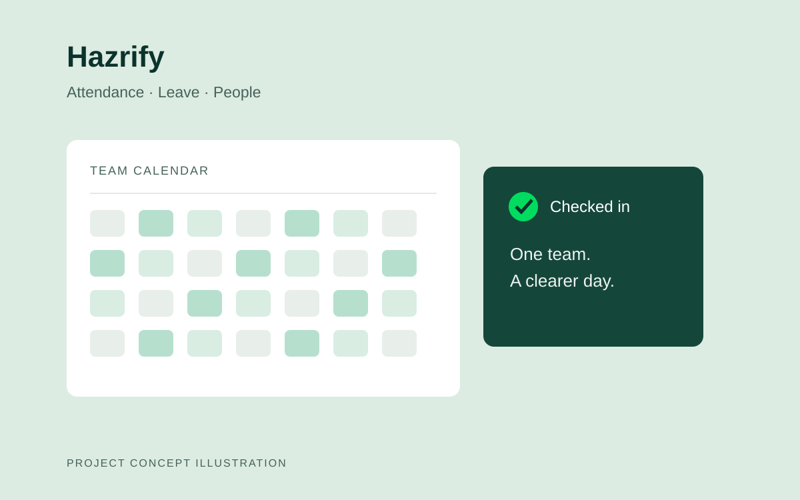
/projects/hazrify.htmlHazrifyPeople operations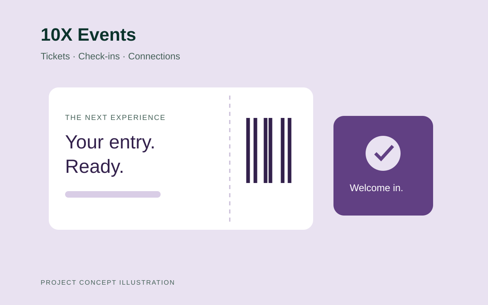
/projects/10x-events.html10X EventsEvents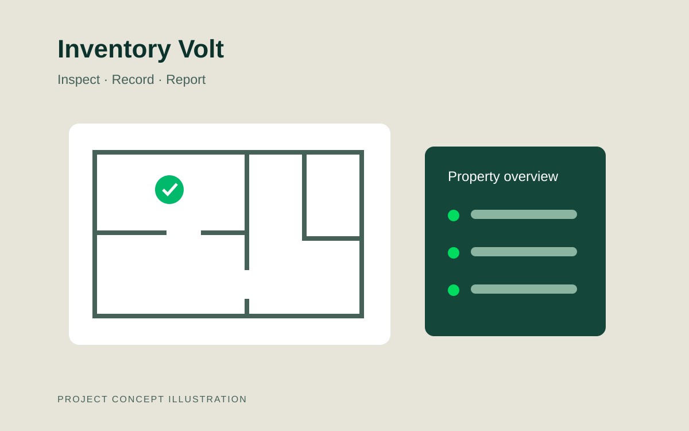
/projects/inventory-volt.htmlInventory VoltProperty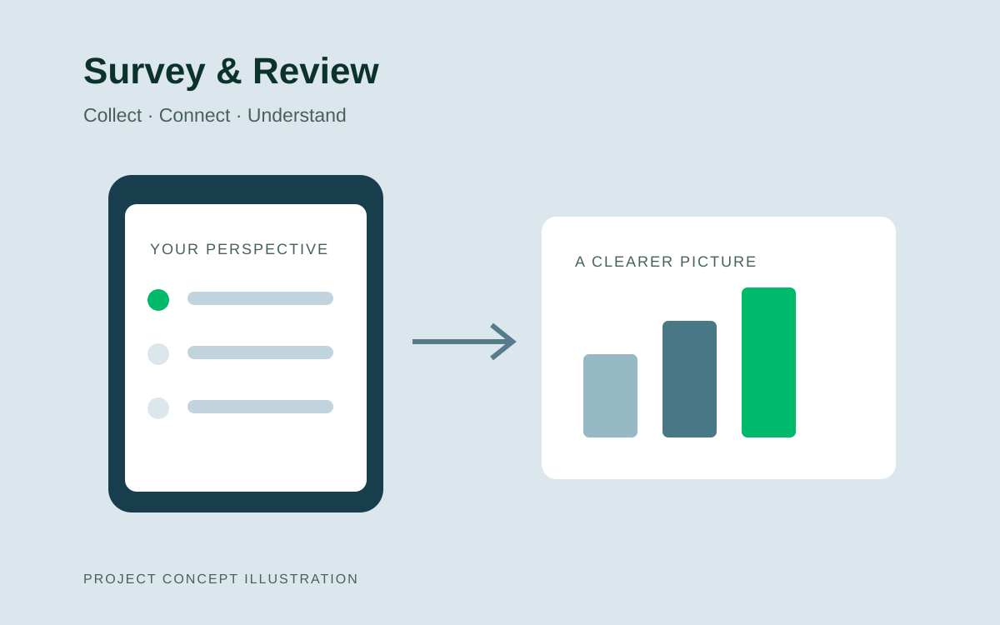
/projects/survey-review-management.htmlSurvey & Review ManagementResearch
- 03/privacy.htmlAbout this siteHow the site handles your information.3 files
No pages match. Try a project name, a sector, or a technology like Laravel.